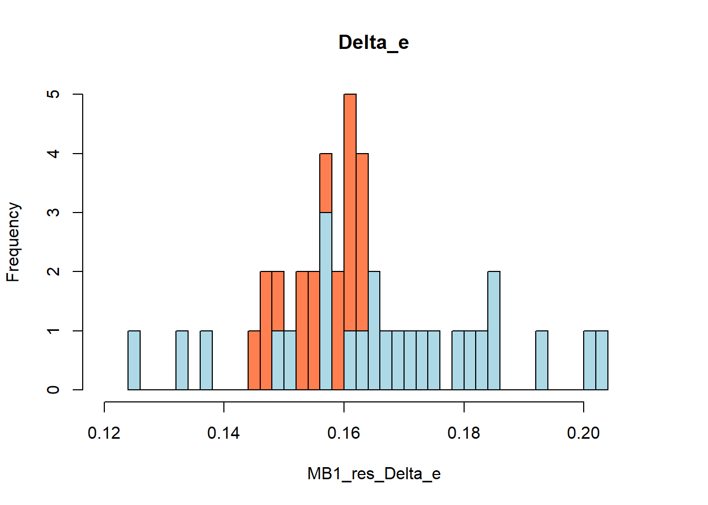

Hello dear readers, and welcome back to my blog as usual. Today I would like to provide a quick update as I am in the middle of my heavy teaching period and therefore I do not have much time to write extensive stuff here, my apologies. Mainly a couple of updates:
Last month I attended the Bayes Conference 2025, where I presented my latest work related to handling missing data in trial-based CEA with a focus on how to specify Bayesian models to handle missing healthcare resource use. The work has also been recently published on MDM and, if you are interested, you arr welcome to have a free look at it here. As for the conference, I found it really interesting as it has a heavy focus on pharmaceutical and consultancy companies interests and topics, mostly related to satisfying requirements of regulatory HTA bodies for the submission of HTA assessments or related statistical analyses. Many important statisticians in the field were also present there, either working in academia or in the industry, who brought up a series of interesting theoretical and practical matters related to statistical analyses of clinical and health data. Unfortunately for me, my session was not particularly attractive to this audience as my focus was specifically on trial-based analyses for which, especially pharmas, there is not much of an interest. Regardless I am happy that I was able to join the conference after a long absence (I think since 2015!) and see how things have evolved and how big of an event it has now become.
Right before leaving for the conference I had the pleasure to give a presentation about trial-based CEA and the importance of using adequate statistical methods in these analyses for the Health Services Research department here at UM. I have collaborated on a series of projects with a few people from this department in the last years, mostly related to the analyses of HTA data, and I have been asked to provide a sort of workshop to PhD students and interested analysts on key analysis methods for trial-based CEAs and how to implement them in R. The workshop went well, although I did not manage to cover all topics I intended, as the people present were really interested in the topic and asked a few questions on what they would like to see in a future session. I have provided all material discussed in the last workshop on my GitHub repository to allow people to play around with the examples, slides, R scripts and functions I created to illustrate how different statistical issues typical of CEA data may be handled in practice. I really hope this was helpful for them. Given the interest in the topic, we have decided to double down and give a second workshop this month on another requested topics, namely conducting HTA using decision-based models. I plan to have a similar session to the last one, perhaps with a little more emphasis on the coding aspect since I noted that all attendees last time had their laptops with them and seemed somewhat familiar with R.
Apart from the previous news, I would also like to provide an update to the code I shared on my last post with respect to the analyses of trial-based CEA data. In particular, due to limited time, last time I provided examples on implementing a series of alternative methods to handle issues such as skewness, correlation, clustering and missing data. One aspect that I skipped at the end was specifically on how to combine missing data methods, namely multiple imputation, with non-parametric bootstrapping approaches for the generation of bootstrap samples that can be used to quantify the level of uncertainty around CE quantities while also appropriately taking into account missingness uncertainty. So, to fill in this gap, today I wanted to complete the code and include a function that can be used to combine the two methods, something that is usually needed when conducting the analyses in practice.
Combine MI and bootstrapping in CEA
The following (folded) code is a copy of what I used in my last post to generate some artificial CEA data for exemplary purposes to demonstrate how MICE and non-parametric bootstrapping may be combined in R. If not of interest, you may skip the folded code and jump to the actual implementation code in the next section. In this simulation I will make things easy and generate data assuming normal distributions and limited number of covariate data. However, the implementation of the methods shown in the following sections is general and can be applied to more realistic data too.
Code
#simulate data and missing under different mechanisms#set rng for reproducibilityset.seed(2345)#set up parameter values to generate datan_full <-250mu_x1 <-0.5sd_x1 <-0.15x1_data <-rnorm(n_full, mu_x1, sd_x1) #simulate covariate valuesn_full <-250mu_x2 <-100sd_x2 <-25x2_data <-rnorm(n_full, mu_x2, sd_x2) #simulate covariate valuesp_trt <-0.5trt_data <-rbinom(n_full, p_trt, size =1)#simulate trt indicatorbeta0_data <-0.2beta1_data <-0.15beta2_data <-1#simulate outcome valuesy1_data <- beta0_data + beta1_data*trt_data + beta2_data*x1_data +rnorm(n_full, 0, 0.1)alpha0_data <-250alpha1_data <-35alpha2_data <-1alpha3_data <-55#simulate outcome valuesy2_data <- alpha0_data + alpha1_data*trt_data + alpha2_data*x2_data + alpha3_data*y1_data +rnorm(n_full, 0, 50)#generate fully-observed datset and assign names to variablesfull.df <-data.frame(y1_data,y2_data,trt_data,x1_data,x2_data)names(full.df) <-c("QALY","TC","trt","u","c")full.df$trt <-ifelse(full.df$trt==0,"old","new")full.df$trt <-factor(full.df$trt, levels =c("old","new"))#introduce MAR missingness in QALY given ulibrary(boot)#set rng for reproducibilityset.seed(2345)#set parameter values for mechanismseta0_mar <--9eta_1_mar <-14.5eta_2_mar <-0eta_3_mar <-0p_mar_e <-inv.logit(eta0_mar + eta_1_mar*full.df$u + eta_2_mar*full.df$QALY + eta_3_mar*as.numeric(full.df$trt))iota0_mar <--4iota_1_mar <-3iota_2_mar <-0iota_3_mar <-0p_mar_c <-inv.logit(iota0_mar + iota_1_mar*full.df$c/100+ iota_2_mar*full.df$TC + iota_3_mar*as.numeric(full.df$trt))#generate missing data indicators (0=observed,1=missing)m_mar_e <-rbinom(n_full, p_mar_e, size =1)m_mar_c <-rbinom(n_full, p_mar_c, size =1)full.mar <- full.df#introduce MAR missing QALY data and distinguish between a variable showing only the observed QALY values (QALY_obs) and another showing only the missing QALY values (QALY_mis)full.mar$m_QALY <- m_mar_efull.mar$m_TC <- m_mar_cfull.mar$QALY_obs <-ifelse(full.mar$m_QALY==0,full.mar$QALY,NA)full.mar$TC_obs <-ifelse(full.mar$m_TC==0,full.mar$TC,NA)#randomly shuffle rows of the MAR datasetfull.mar <- full.mar[sample(1:nrow(full.mar)), ]#keep only relevant variables and rename themdataset.mis <- full.mar[,c("QALY_obs","TC_obs","trt","u","c")]names(dataset.mis) <-c("QALY","TC","trt","u","c")
We can inspect the first few rows of the generated data stored in the R object full.mar to see the variable showing the observed QALY values (QALY) and TC values (TC), which were generated under a MAR mechanism conditional on the fully observed baseline utilities (u) and costs (c).
head(dataset.mis, n=8)
QALY TC trt u c
34 0.6891580 378.6541 new 0.3518463 91.95314
48 0.8021310 NA new 0.5254678 93.04074
193 0.4477710 455.1781 new 0.2485247 126.63579
188 0.8710712 471.2896 new 0.4307028 110.27430
58 0.7926060 NA new 0.4134793 103.14698
87 NA 458.9715 new 0.6311773 114.55390
135 0.6656135 423.3912 new 0.3820836 132.51559
107 0.6320513 320.8635 new 0.3455197 116.77745
Here, I will skip descriptions and presentations of MI and bootstrapping as these were given in my previous post, so I will assume that readers will already be familiar with these methods and what they do. If you are not sure, check my previous post for a refresher.
First, I will use the following R code to implement MICE (under a MAR assumption) to the generated data. The following MI specification is used: number of imputations \(M=5\); PMM as imputation method for all missing variables (QALY and TC) using corresponding observed baseline values (u and c) as the only variables included in their respective imputation models.
Code
library(mice) #load package to implement MICE#split data by treatment group (Old and New)dataset.mis_Old <- dataset.mis[dataset.mis$trt=="old",]dataset.mis_New <- dataset.mis[dataset.mis$trt=="new",]#set up MICE inputs for old groupmice_Old <-mice(dataset.mis_Old, print =FALSE, method ='pmm', maxit =0)pM_Old <- mice_Old$predictorMatrix #extract default predictor matrix#customise pred matrix to your needs (row=variable to be imputed, column=variable used as predictor)#in the matrix an entry of 1 means that the corresponding column variable is used as predictor for the corresponding row variablepM_Old["QALY",c("TC","u")] <-1#require that QALY always imputed using TC and upM_Old["QALY",c("c")] <-0#require that QALY is never imputed using cpM_Old["TC",c("u")] <-0#require that TC is never imputed using upM_Old[,c("trt")] <-0#require that any variable is never imputed using trtmeth_Old <- mice_Old$method #extract default imputation methods#by default PMM assumed as imputation methods for numeric variables#set up MICE inputs for new groupmice_New <-mice(dataset.mis_New, print =FALSE, method ='pmm', maxit =0)pM_New <- mice_New$predictorMatrix #extract default predictor matrixpM_New["QALY",c("TC","u")] <-1#require that QALY always imputed using TC and upM_New["QALY",c("c")] <-0#require that QALY is never imputed using cpM_New["TC",c("u")] <-0#require that TC is never imputed using upM_New[,c("trt")] <-0#require that any variable is never imputed using trtmeth_New <- mice_New$method #extract default imputation methodsM <-5#number of imputations#set rng for reproducibilityset.seed(2345)#implement MICE to old and new groupmice_Old_fit <-mice(dataset.mis_Old, predictorMatrix = pM_Old, method=meth_Old, m = M, print =FALSE)mice_New_fit <-mice(dataset.mis_New, predictorMatrix = pM_New, method=meth_New, m = M, print =FALSE)#combine the imputed datasets across groupsmice_fit <-rbind(mice_Old_fit, mice_New_fit)
Next, rather then simply fitting the analysis model to each imputed data sets and summarise the output, as it would be the normal approach from statistical analyses, it is necessary to specify how the bootstrapping technique should be combined with MICE in order to generate bootstrapped and multiply-imputed estimates for the CE quantities of interest, i.e. mean incrementals for QLAYs and Total costs between groups. As I briefly mention at the end of my last post, combination of MI with bootstrapping or other non-standard analysis methods can be very challenging and clear guidelines about the performance of the methods when combined together is still lacking (Schomaker and Heumann 2018; Brand et al. 2019). In particular, two main distinct combination strategies may be considered:
Multiple Imputation for the inner loop) & Bootstrapping for the outer loop (MB). The general idea behind this strategy is to first apply MI to the original data set to generate \(M\) replications of the imputed data set; then non-parametric bootstrapping is applied to each of these \(M\) data sets to generate \(B\) bootstrap replications for each of the multiply-imputed data sets, thus producing a total of \(M\times B\) different data sets. Next, the analysis model of interest is fitted to each of these data sets and associated \(M\times B\) estimates for the parameters of interest are derived.
Multiple Imputation for the outer loop) & Bootstrapping for the inner loop (BM). The general idea behind this strategy is to first apply non-parametric bootstrapping to the original data set to generate \(B\) bootstrap replications of the original data set (including missing values); then MI is applied to each of these \(B\) data sets to generate \(M\) multiply-imputed data sets for each of the bootstrapped data sets, thus producing a total of \(B\times M\) different data sets. Next, the analysis model of interest is fitted to each of these data sets and associated \(B\times M\) estimates for the parameters of interest are derived.
Regardless of the strategy used to combine MI and bootstrapping, it is then necessary to decide how to summarise the relevant parameter estimates after \(M \times B\) replications have been produced. Also here different approaches have been considered. One option would be to use the entire \(M \times B\) set of parameter estimate replications in order to quantify the level of uncertainty around them. This means that the entire distribution is used to generate standard CE output, such as CE plane and CEAC and related CE quantities with associated intervals. A second option would be to first average parameter estimates across the \(M\) multiply-imputed replications in order to obtain a distribution of \(B\) estimates, which would then represent the values to be used for generating the CE output.
Although the relative performance of these approaches have been examined under some simulation scenarios, where no large differences across these methods have been detected, their actual performance under general situations still needs to be fully assessed. Thus, no general guidelines exist that can recommend one approach over the other in all cases, especially given that these results are based on simulation methods. As a practical guideline, it may be important to outline that BM can be computationally much more intensive to implement with respect to MB, since the number of bootstrap iterations is typically required to be much higher compared to the number of imputations.
The following (folded) code part shows how to construct a function which allows the implementation of either MB or BM strategies in the context of trial-based CEA when fitting either a OLS or SUR as the main analysis model for CE data.
Code
#function and needed packages to generate bootstrap estimates for mean QALY/TC and incremental#differences when running a OLS/SUR model after applying MICE to handle missing data#note: different ways to combine MI and bootstrapping estimates can be obtained based on the inputs providedlibrary(systemfit)library(data.table)library(rlang)library(bootstrap)library(emmeans)library(mice)boot_mi_ec <-function(x, B, QALYreg, TCreg, method ="OLS", profile_QALY="default", profile_TC="default", trt_pos =2, combine="MB"){#the following lines are needed to make sure proper inputs are givenif(!inherits(x, c("mids"))) {stop("Only objects of class 'mids' can be used")}if(!is.data.frame(x$data)){stop("data needs to be a data frame object")}if(!is.numeric(B)){stop("please provide number of bootstrap iterations")}if(B<=0|!B%%1==0){stop("please provide number of bootstrap iterations")}if(!is_formula(QALYreg)){stop("please provide formula for QALY model")}if(!is_formula(TCreg)){stop("please provide formula for TC model")}if(!method %in%c("OLS","SUR")){stop("please provide valid method name")}if(!combine %in%c("MB","BM")){stop("please provide valid combination name")}if(!is.numeric(trt_pos) |length(trt_pos)!=1| trt_pos<=0){stop("please provide valid trt indicator position in regressions")} data <- x$data #original data set n <-dim(data)[1] #original sample size#n covariates nX_e <-dim(model.matrix(QALYreg, data))[2] nX_c <-dim(model.matrix(TCreg, data))[2]#extract name of trt indicator and outcomes from provided formula trt_name_e <-all.vars(QALYreg)[trt_pos] trt_name_c <-all.vars(TCreg)[trt_pos]if(trt_name_e != trt_name_c){stop("please provide same trt variable name and position in QALY and TC formuale")} QALY_name <-all.vars(QALYreg)[1] TC_name <-all.vars(TCreg)[1]#check if trt indicator is factor and store its levelsif(is.factor(data[,trt_name_e])){ trt_fact <-TRUE trt_lev <-levels(data[,trt_name_e])} else { trt_fact <-FALSE trt_lev <-unique(data[,trt_name_e])}if(length(trt_lev)!=2){stop("The function only allows comparison between two trt groups")} #check that correct profile provided or set defaultif(profile_QALY !="default"){if(!is.vector(profile_QALY) |length(profile_QALY)!=nX_e){stop("provide valid profile for QALYreg")}}if(profile_TC !="default"){if(!is.vector(profile_TC) |length(profile_TC)!=nX_c){stop("provide valid profile for TCreg")}}#extract MI infor from input object M <- x$m #n imputations pm <- x$predictorMatrix #predictor matrix#remove trt as predictor pm[,trt_name_e] <-0#pm <- pm[-which(colnames(pm)==trt_name_e),-which(colnames(pm)==trt_name_e)] meth <- x$method #imputation methods niter <- x$iteration #n iterations before sampling#split original data by treatment group x_trt1 <-data.frame(x$data[x$data[,trt_name_e]==unique(data[,trt_name_e])[1],]) x_trt2 <-data.frame(x$data[x$data[,trt_name_e]==unique(data[,trt_name_e])[2],])#generate imputations and bootstrap estimates based on inputsif(combine =="MB"){ #outer loop=MI + inner loop=Boot#prepare empty objects to contain bootstrapped estimates data_MB_list <-list() coeff_c <- coeff_e <-matrix(NA, nrow = M, ncol = B) em_c_ctr <- em_e_ctr <-matrix(NA, nrow = M, ncol = B) em_c_int <- em_e_int <-matrix(NA, nrow = M, ncol = B) data_imp <-list()for(m in1:M){#apply MI to each arm based on arguments from mice objects provided as input mice_data_trt1 <-mice(x_trt1, predictorMatrix = pm, method=meth,m = M, maxit = niter, print =FALSE) mice_data_trt2 <-mice(x_trt2, predictorMatrix = pm, method=meth,m = M, maxit = niter, print =FALSE)#combine the imputed datasets across groups data_imp <-rbind(mice_data_trt1, mice_data_trt2)#extract imputed data sets data_imp[[m]] <-data.table(complete(data_imp,m))for(i in1:B){#sample with replacement for each imputed data set data_MB_list[[i]] <- data_imp[[m]][sample(.N, n, replace = T)]#fit model model_MB_ec <-systemfit(list(QALYreg = QALYreg, TCreg = TCreg), method=method, data=data_MB_list[[i]]) #extract covariate values X_e <-model.matrix(model_MB_ec$eq[[1]]) X_c <-model.matrix(model_MB_ec$eq[[2]]) #define QALYreg profileif(profile_QALY =="default"){ profile_b_QALY <-apply(X_e, 2, mean, na.rm=T) } else {profile_b_QALY <- profile_QALY} profile_b_QALY_ctr <- profile_b_QALY_int <- profile_b_QALY profile_b_QALY_ctr[trt_pos] <-0#set profile for comparator profile_b_QALY_int[trt_pos] <-1#set profile for reference#define TCreg profileif(profile_TC =="default"){ profile_b_TC <-apply(X_c, 2, mean, na.rm=T) } else {profile_b_TC <- profile_TC} profile_b_TC_ctr <- profile_b_TC_int <- profile_b_TC profile_b_TC_ctr[trt_pos] <-0#set profile for comparator profile_b_TC_int[trt_pos] <-1#set profile for reference#extract coefficient estimates from each model coeff_e[m,i] <-summary(model_MB_ec$eq[[1]])$coefficients[trt_pos,"Estimate"] coeff_c[m,i] <-summary(model_MB_ec$eq[[2]])$coefficients[trt_pos,"Estimate"] #compute linear combination of parameters em_e_ctr[m,i] <-t(profile_b_QALY_ctr) %*%summary(model_MB_ec$eq[[1]])$coefficients[,"Estimate"] em_e_int[m,i] <-t(profile_b_QALY_int) %*%summary(model_MB_ec$eq[[1]])$coefficients[,"Estimate"] em_c_ctr[m,i] <-t(profile_b_TC_ctr) %*%summary(model_MB_ec$eq[[2]])$coefficients[,"Estimate"] em_c_int[m,i] <-t(profile_b_TC_int) %*%summary(model_MB_ec$eq[[2]])$coefficients[,"Estimate"] } } }if(combine =="BM"){ #outer loop=Boot + inner loop=MI#prepare empty objects to contain bootstrapped estimates data_BM_list <-list() coeff_c <- coeff_e <-matrix(NA, nrow = B, ncol = M) em_c_ctr <- em_e_ctr <-matrix(NA, nrow = B, ncol = M) em_c_int <- em_e_int <-matrix(NA, nrow = B, ncol = M) data.dt <-data.table(x$data) data_imp <-list() for(i in1:B){#sample with replacement from original data set data_BM_list[[i]] <-as.data.frame(data.dt[sample(.N, n, replace = T)])#split data by arm data_BM_trt1 <-data.frame(data_BM_list[[i]][data_BM_list[[i]][,trt_name_e]==unique(x$data[,trt_name_e])[1],]) data_BM_trt2 <-data.frame(data_BM_list[[i]][data_BM_list[[i]][,trt_name_e]==unique(x$data[,trt_name_e])[2],])#apply MI per arm based on arguments from mice objects provided as input mice_data_boot_trt1 <-mice(data_BM_trt1, predictorMatrix = pm, method=meth,m = M, maxit = niter, print =FALSE) mice_data_boot_trt2 <-mice(data_BM_trt2, predictorMatrix = pm, method=meth,m = M, maxit = niter, print =FALSE)#combine the imputed datasets across groups mice_data_boot <-rbind(mice_data_boot_trt1, mice_data_boot_trt2)for(m in1:M){#extract each imputed data set data_imp[[m]] <-complete(mice_data_boot, m)#fit model to each imputed data set model_BM_ec <-systemfit(list(QALYreg = QALYreg, TCreg = TCreg), method=method, data=data_imp[[m]]) #extract covariate values X_e <-model.matrix(model_BM_ec$eq[[1]]) X_c <-model.matrix(model_BM_ec$eq[[2]]) #define QALYreg profileif(profile_QALY =="default"){ profile_b_QALY <-apply(X_e, 2, mean, na.rm=T) } else {profile_b_QALY <- profile_QALY} profile_b_QALY_ctr <- profile_b_QALY_int <- profile_b_QALY profile_b_QALY_ctr[trt_pos] <-0#set profile for comparator profile_b_QALY_int[trt_pos] <-1#set profile for reference#define TCreg profileif(profile_TC =="default"){ profile_b_TC <-apply(X_c, 2, mean, na.rm=T) } else {profile_b_TC <- profile_TC} profile_b_TC_ctr <- profile_b_TC_int <- profile_b_TC profile_b_TC_ctr[trt_pos] <-0#set profile for comparator profile_b_TC_int[trt_pos] <-1#set profile for reference #extract coefficient estimates from each model coeff_e[i,m] <-summary(model_BM_ec$eq[[1]])$coefficients[trt_pos,"Estimate"] coeff_c[i,m] <-summary(model_BM_ec$eq[[2]])$coefficients[trt_pos,"Estimate"]#compute linear combination of parameters em_e_ctr[i,m] <-t(profile_b_QALY_ctr) %*%summary(model_BM_ec$eq[[1]])$coefficients[,"Estimate"] em_e_int[i,m] <-t(profile_b_QALY_int) %*%summary(model_BM_ec$eq[[1]])$coefficients[,"Estimate"] em_c_ctr[i,m] <-t(profile_b_TC_ctr) %*%summary(model_BM_ec$eq[[2]])$coefficients[,"Estimate"] em_c_int[i,m] <-t(profile_b_TC_int) %*%summary(model_BM_ec$eq[[2]])$coefficients[,"Estimate"] } } }#create list objects to store all results res_e_b_list <-list("Delta_e"=coeff_e,"mu_e_ctr"=em_e_ctr,"mu_e_int"=em_e_int) res_c_b_list <-list("Delta_c"=coeff_c,"mu_c_ctr"=em_c_ctr,"mu_c_int"=em_c_int) input_list <-list("data"=x$data,"method"=method, "trt_pos"=trt_pos, "QALYreg"=QALYreg,"TCreg"=TCreg,"profile_QALY_ctr"=profile_b_QALY_ctr,"profile_QALY_int"=profile_b_QALY_int,"profile_TC_ctr"=profile_b_TC_ctr,"profile_TC_int"=profile_b_TC_int, "combine"=combine)#compute overall list and return it as output from the function res_ec_b_list <-list("QALY_boot"=res_e_b_list,"TC_boot"=res_c_b_list,"inputs"=input_list)class(res_ec_b_list) <-"bootMICE"return(res_ec_b_list)}
Next, I show how the above function can be implemented to the generated data to fit either a BM or MB strategy. To avoid a too long computational time and due to the demonstrative purpose of the post, I will fix the number of bootstrap replications to \(B=25\).
Code
#combine MICE with bootstrapping based on OLS/SUR analyses to obtain distributions of statistics of interest #such as mean QALY/TC by arm and mean differences between groups#get MI and bootstrap results (25 iterations x 5 imputations = 125 replications)#version MB: first generate M imputed datasets (outer loop) and then within each#imputed dataset generate B bootstrap replications (inner loop)set.seed(2345)boot_mi_res <-boot_mi_ec(x=mice_fit, QALYreg = QALY~trt+u, TCreg = TC~trt+c,method ="OLS",B=25,combine ="MB")#summarise B x M matrix of estimates in two possible ways:#1)average across imputations MB1_res_Delta_e <-apply(boot_mi_res$QALY_boot$Delta_e, 2, mean)MB1_res_mu_e_ctr <-apply(boot_mi_res$QALY_boot$mu_e_ctr, 2, mean)MB1_res_mu_e_int <-apply(boot_mi_res$QALY_boot$mu_e_int, 2, mean)MB1_res_Delta_c <-apply(boot_mi_res$TC_boot$Delta_c, 2, mean)MB1_res_mu_c_ctr <-apply(boot_mi_res$TC_boot$mu_c_ctr, 2, mean)MB1_res_mu_c_int <-apply(boot_mi_res$TC_boot$mu_c_int, 2, mean)#2)average across imputations and bootstrap replicatesMB2_res_Delta_e <-c(boot_mi_res$QALY_boot$Delta_e)MB2_res_mu_e_ctr <-c(boot_mi_res$QALY_boot$mu_e_ctr)MB2_res_mu_e_int <-c(boot_mi_res$QALY_boot$mu_e_int)MB2_res_Delta_c <-c(boot_mi_res$TC_boot$Delta_c)MB2_res_mu_c_ctr <-c(boot_mi_res$TC_boot$mu_c_ctr)MB2_res_mu_c_int <-c(boot_mi_res$TC_boot$mu_c_int)#version BM: first generate B bootstrap replications (outer loop) and then within each#bootstrapped dataset generate M imputations (inner loop)set.seed(2345)boot_mi_res <-boot_mi_ec(x=mice_fit, QALYreg = QALY~trt+u, TCreg = TC~trt+c,method ="OLS",B=25,combine ="BM")#summarise B x M matrix of estimates in two possible ways:#1)average across imputations BM1_res_Delta_e <-apply(boot_mi_res$QALY_boot$Delta_e, 1, mean)BM1_res_mu_e_ctr <-apply(boot_mi_res$QALY_boot$mu_e_ctr, 1, mean)BM1_res_mu_e_int <-apply(boot_mi_res$QALY_boot$mu_e_int, 1, mean)BM1_res_Delta_c <-apply(boot_mi_res$TC_boot$Delta_c, 1, mean)BM1_res_mu_c_ctr <-apply(boot_mi_res$TC_boot$mu_c_ctr, 1, mean)BM1_res_mu_c_int <-apply(boot_mi_res$TC_boot$mu_c_int, 1, mean)#2)average across imputations and bootstrap replicatesBM2_res_Delta_e <-c(boot_mi_res$QALY_boot$Delta_e)BM2_res_mu_e_ctr <-c(boot_mi_res$QALY_boot$mu_e_ctr)BM2_res_mu_e_int <-c(boot_mi_res$QALY_boot$mu_e_int)BM2_res_Delta_c <-c(boot_mi_res$TC_boot$Delta_c)BM2_res_mu_c_ctr <-c(boot_mi_res$TC_boot$mu_c_ctr)BM2_res_mu_c_int <-c(boot_mi_res$TC_boot$mu_c_int)
Finally, we can quickly compare the generated incremental quantities \(\Delta_e\) distributions under each strategy and aggregation approach, for example using histograms. First, we consider using the averaged \(B\) estimates across the \(M\) imputations under either MB (red) or BM (blue).

and then using all the \(M\times B\) estimates under either MB (red) or BM (blue)
Similar functions that allow the implementation of MI and bootstrapping for GLMs and MLMs are also available from my GitHub repository, where there is also a separate file containing all well-wrapped functions that I showed in this and the last post for trial-based CE analyses. Thanks again for reading, and I hope this will be of help for some of you. Till next time!
References
Brand, Jaap, Stef van Buuren, Saskia le Cessie, and Wilbert van den Hout. 2019. “Combining Multiple Imputation and Bootstrap in the Analysis of Cost-Effectiveness Trial Data.”Statistics in Medicine 38 (2): 210–20.
Schomaker, Michael, and Christian Heumann. 2018. “Bootstrap Inference When Using Multiple Imputation.”Statistics in Medicine 37 (14): 2252–66.
![]()